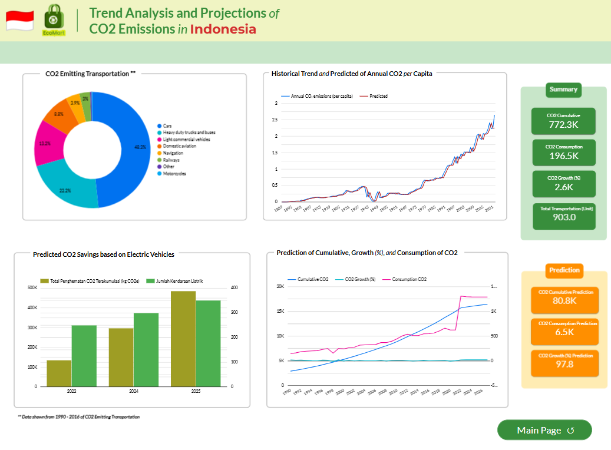
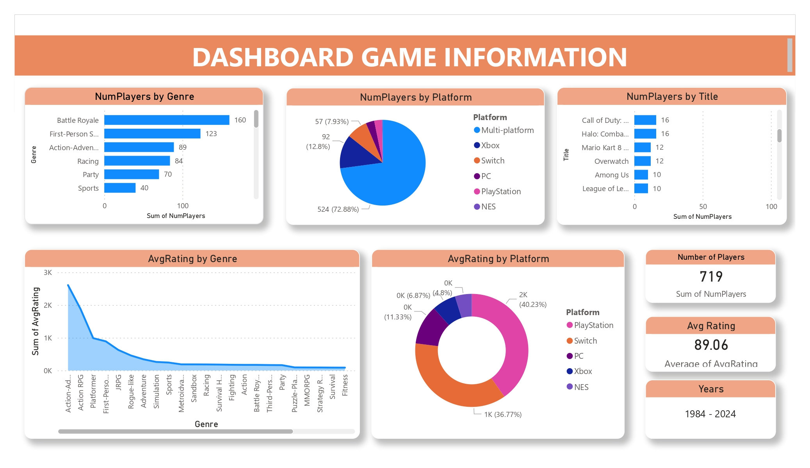
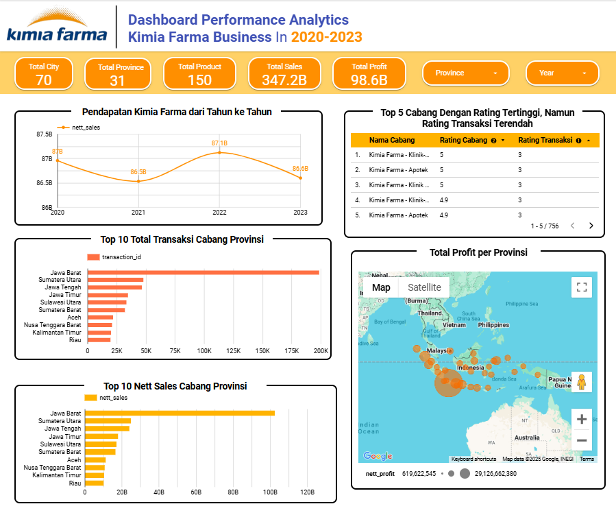
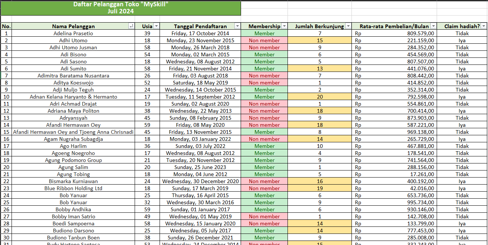
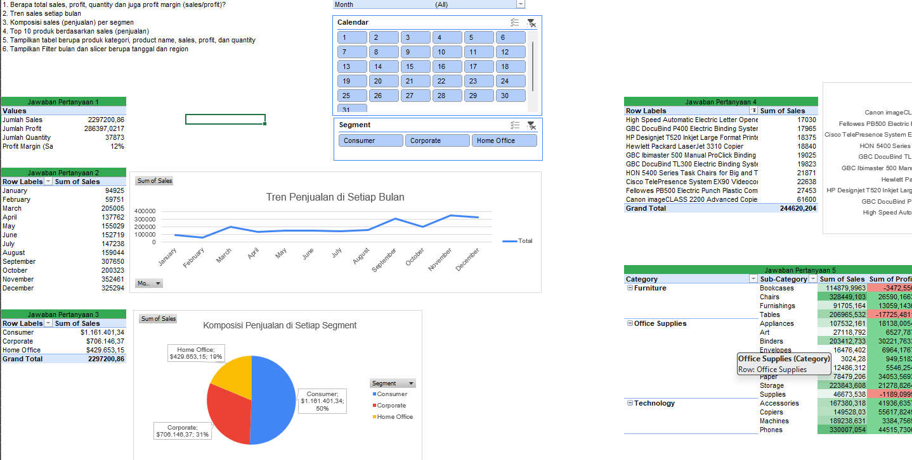
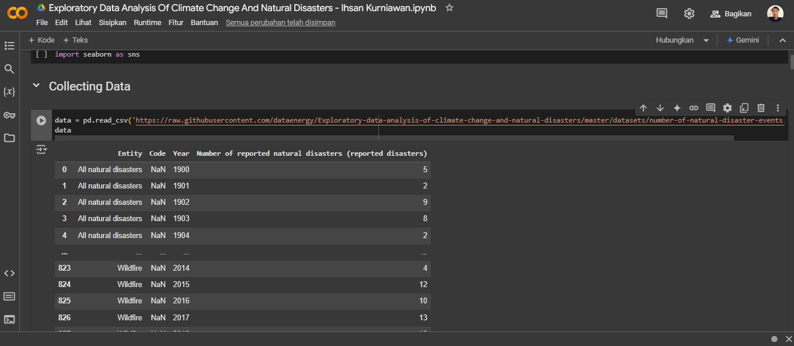
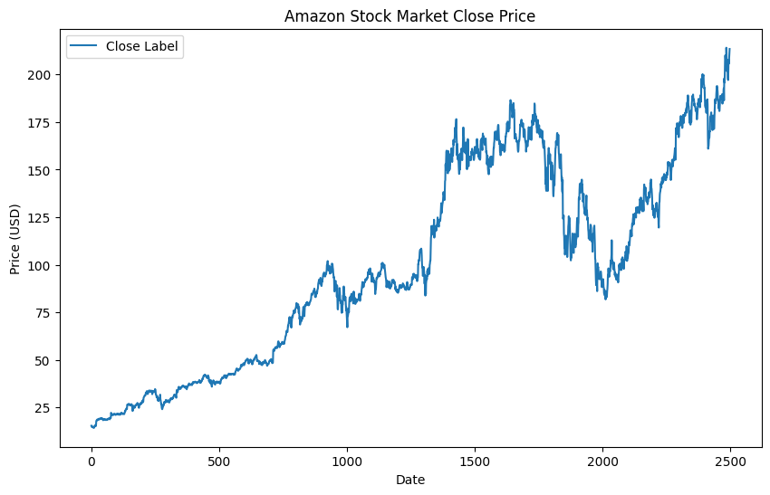

Dashboard Tren Analysis & Prediction
Processed waste, methane and CO2 emissions data from various sectors to build an interactive dashboard showing annual trends 2019-2022. Visualizations include waste types and emissions per sector such as agriculture, industry, and transportation, as well as analysis of projected CO2 reductions with electric vehicles until 2025. In addition, historical trends and predictions of CO2 emissions per capita until 2050 were compiled.
See Live

Dashboard Game Information
Crunched data from Kaggle to analyze trends by genre, platform, and game title, and created interactive visualizations displaying the number of players and average ratings. Key findings include the popularity of Battle Royale, FPS, and Action-Adventure genres, the dominance of the NES platform, and the game Fortnite. The results of the analysis are presented in an interactive dashboard to facilitate interpretation and data-driven decision-making.
See Live

Dashboard Perfomance Analytics
Using Google BigQuery, Python, and Looker Studio to analyze Kimia Farma's business performance during 2020-2023. Create ERDs to define relationships between tables and build interactive dashboards that display revenue trends, branch performance, and profitability analysis by price category.
See Live

Customer Data Processing
Process customer data using Microsoft Excel with sorting, filtering, and conditional formatting features to improve data visibility, and apply IF logic formula to determine reward claims based on visit criteria. Data is professionally formatted with date, currency, and cell color formatting for quick identification. Clear and structured visualization improves analysis efficiency, supports informative data presentation, and facilitates data-driven decision making.
See Live

Sales and Profit Data Visualization
Analyze sales data to understand business performance and identify improvement opportunities using Microsoft Excel. Analysis included calculation of total sales, profit, quantity, and profit margin, and visualization of monthly sales trends. Sales composition by segment and Top 10 products by sales were identified, along with product detail tables including category, name, sales, profit, and quantity. Interactive filters (slicers) were added for analysis by date and region, making interpretation and decision-making easier.
See Live

Exploratory Data Analysis Of Climate Change And Natural Disasters
Cleaning data and dealing with missing values to ensure the quality of the analysis, identifying patterns and trends across different disaster types, and creating data visualizations that illustrate the results of the analysis. Data-driven insights are presented to identify the most frequent types of disasters.
See Live

Amazon Stock Market Analysis
Cleaning and processing historical stock price data to analyze trends and patterns in Amazon's stock market performance. The analysis includes creating visualizations to depict the stock's closing price over time, identifying significant growth phases and fluctuations. Data-driven insights are highlighted to better understand Amazon's market journey and support strategic financial decisions.
See Live